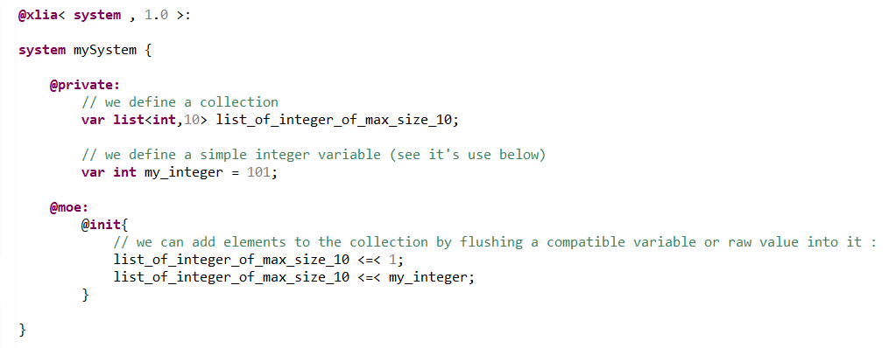
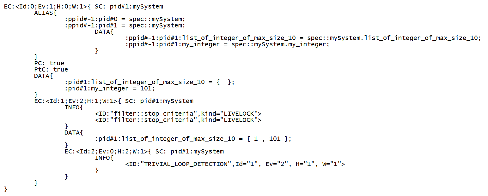
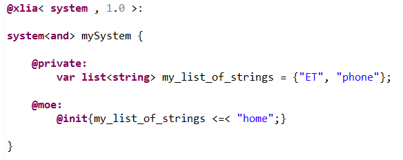
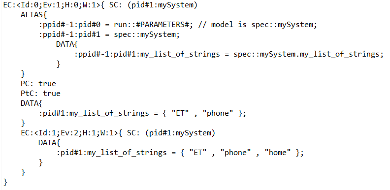

The syntax for creating an empty list and adding new elements to it is shown in the following example :
At the initialization of the system ("@moe:@init:") 2 values will be flushed into our blank list : 1 and 101.
We can verify that this is the case by (for instance) generating and looking into the "phase1.fscn" file :
The syntax for creating a non-empty list is shown in the following example :
We can verify the initial content as well as the later content of the list by (for instance) generating and looking into the "phase1.fscn" file :
NOT IMPLEMENTED FOR LISTS
NOT IMPLEMENTED FOR LISTS